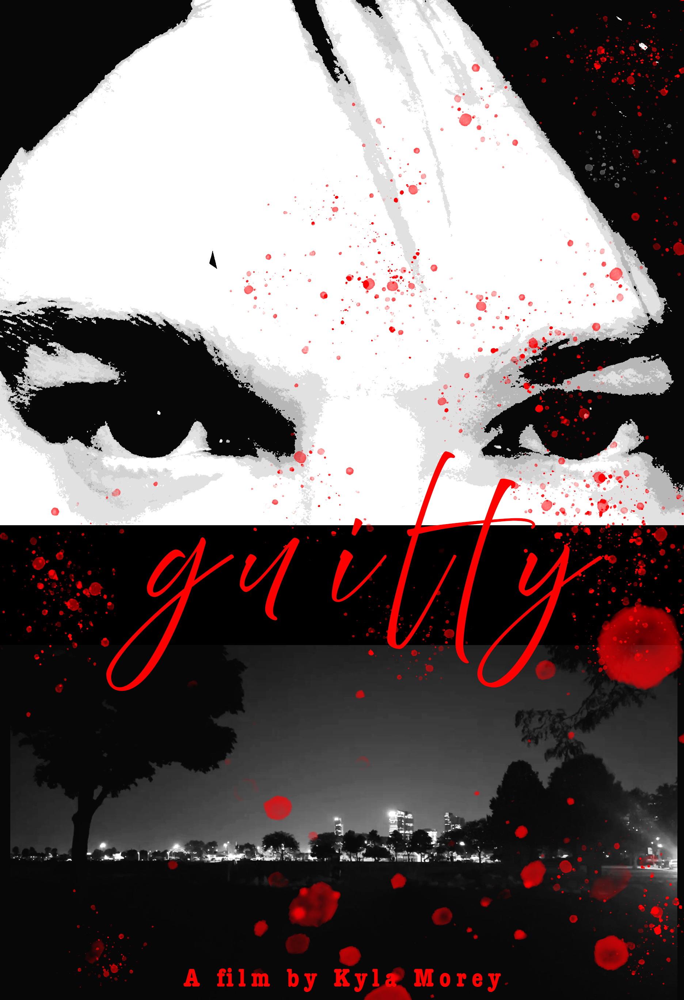
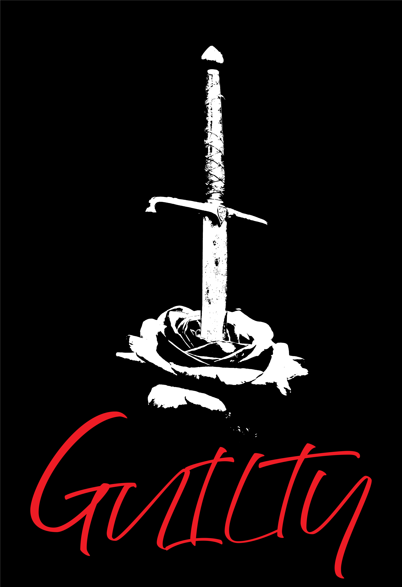

Promotionl Posters

The is a clear showcase of tension with the actor making direct eye contact with the audience. Almost suggesting that they commited a crime (sentenced guilty) but of what crime. One would have to watch the film to find out.

This series of posters were inspired by vintage horror and psychological thriller book covers. They always have a simpler graphic or evening striking appearance to draw the reader in. The first poster is much more simple in the iconography. The sword in the rose is a metaphor painful duality of love, beauty and loss and it represents the willingness to destroy something beautiful. Like the film, I left the poster to be up to the user’s interpretation of what it could mean. This poster is a bit more on the nose (as one would say).